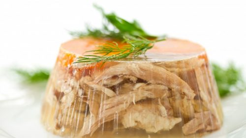

Holodetz Recipe

Description
Russian Holodets is a cold meat jelly, traditionally made in Russia for the holiday table.
This Russian Holodets recipe is a very authentic Russian recipe that has been around for centuries.
Holodets is similar to the head cheese that you can find in many ethnic delis.
Russian Holodets is eaten cold out of the refrigerator, and spread with horseradish or mustard.
Ingredients
- 2 lbs pig, cow or chicken feet (or use chicken legs as an alternative)
- 1 lb boneless meat (any kind of meat, for example chicken thighs)
- Water
- Onion
- Salt
- 1/8 tsp pepper
- Clearn Gelatin
- 2 bay leaves
- Babushka's Help
Steps
-
Put all the meat, whole onion, salt and pepper in a large pot. Add enough water to completely cover the meat plus an extra inch of water on top of the meat.
- Bring water to a boil and skim off the foam.
- Reduce heat to simmer, cover and simmer for 3 hours.
- Add the bay leaves and simmer for 20 minutes.
- Remove all the meat from the pot.
- Discard the onion and bay leaves.
- Pull the meat away from the bones and discard the bones.
- Chop all the meat and put on the bottom of an 8×12 dish (you can use Pyrex dish).
- Strain the cooking liquid through the cheesecloth.
- If you were using chicken legs instead of feet, you need to add the gelatin to the liquid. Add 3 grams of gelatine for each cup of the liquid and mix thoroughly.
- Pour the liquid over the chopped meat.
- Refrigerate the dish with Holodets overnight.
- Cut Holodets into squares and serve with horseradish or mustard.
Go Back